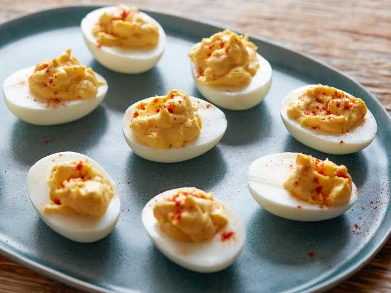

How to Make Classic Deviled Eggs & Deviled Egg Filling Tips
Add eggs to a saucepan and fill the pot with water to ½ inch above the eggs. Over high heat, bring the water to a rolling boil, then cover, remove from heat. Let the eggs stand covered for 15 to 17 minutes.
Fill a medium bowl with ice water and transfer the eggs to the ice water for 5 to 10 minutes. Peel the eggs under running cool water.
Mash the yolks. Stir in mayo, vinegar, mustard, salt, and pepper.
Fill the whites with the yolk filling. Finished with a sprinkle of paprika and dill.
For the smoothest filling: Mash yolks very smooth first, then add mayo and mix until fully creamy.
Prevent gray-green yolks: Chill the eggs in ice water right after cooking.
Just before serving, fill each egg white with the creamy yolk mixture. A small spoon or piping bag can be used.